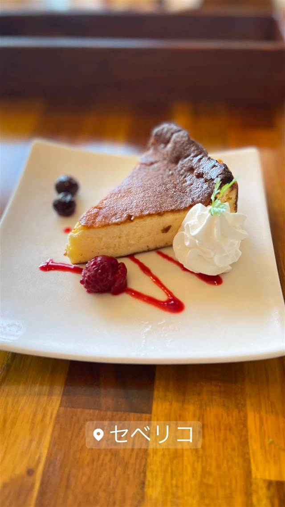
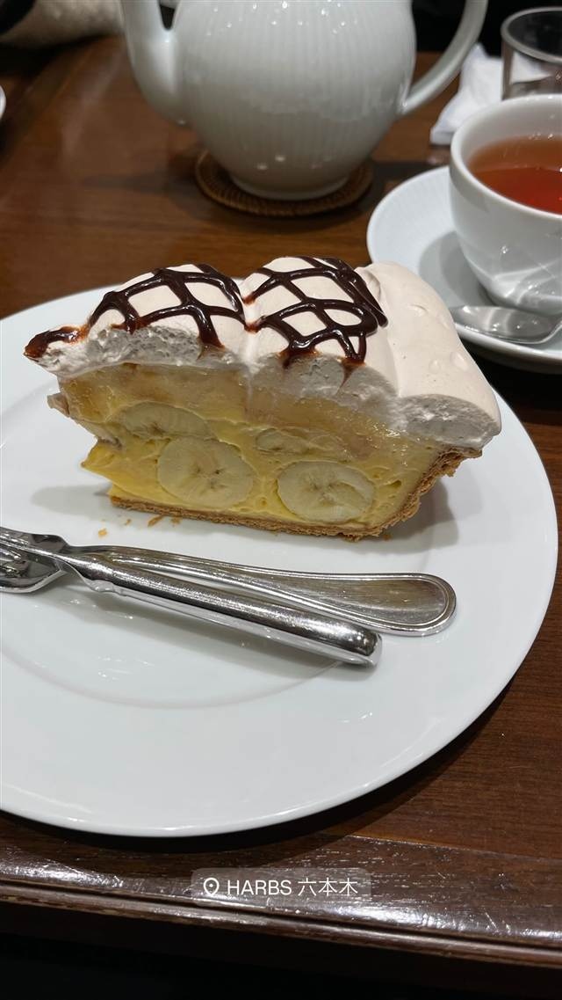
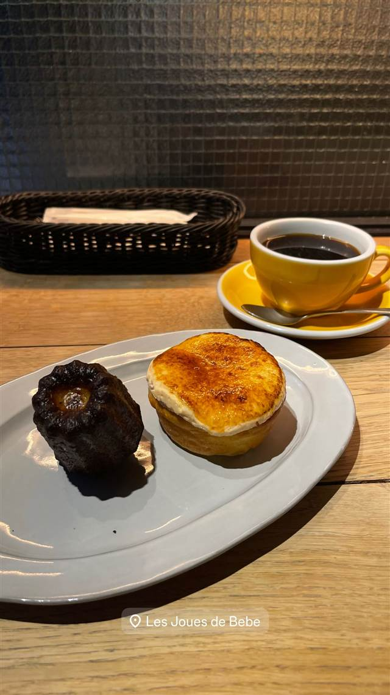
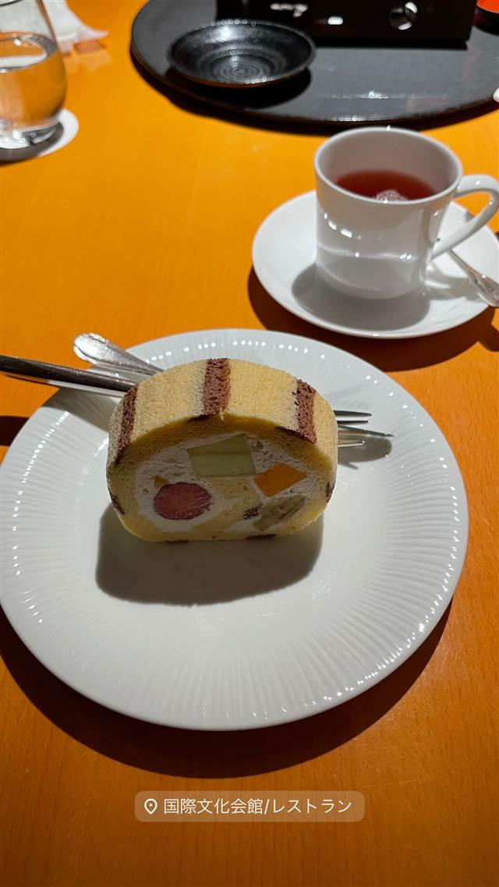

セベリコ(SEVERICO)
お箸で食べる地中海料理、名物はバスク風チーズケーキ
セベリコ
町田の地中海料理店で働いていた二人が30代半ばで念願の独立を果たし、2020年2月に鵠沼海岸駅前で開業。「お箸で食べる地中海料理」をコンセプトに、バスク風チーズケーキなどを提供する。
TRIVIA
へえ、という話
- 店名はスペイン語「Se ve rico(美味しそう)」に由来する
- 鵠沼海岸に住む江盛氏が見つけた居抜き物件がきっかけで開業に至った
| 創業 | 2020年2月開業 |
|---|---|
| 看板 | 地中海料理(スペイン・イタリア・フランス料理がベース)、バスク風チーズケーキ |
| こだわり | 「お箸で食べる地中海料理」をコンセプトにしている |
| 予算 | 昼 ¥1,000～¥1,999 夜 ¥2,000～¥2,999 |
| 定休日 | 無休 |
| 予約 | 予約可 |
| 場所 | 鵠沼海岸駅 神奈川県藤沢市鵠沼海岸(鵠沼海岸駅前) |
| 注意 | 鵠沼海岸駅前、ランチ利用可 |
食べたもの：バスクチーズケーキ
NEARBY
近い店・同じ系統の店
-

ケーキ・パフェ 六本木駅 HARBS 六本木ヒルズ店 喫茶店から続く、フルーツたっぷりの大きな8号ミルクレープ 昼 ¥1,000～¥1,999 夜 ¥1,000～¥1,999 -
 ケーキ・パフェ 銀座
珈琲専門店 三十間 銀座本店
地下の隠れ家で味わうふわふわチーズケーキとコーヒー
昼 ¥1,000～¥1,999 夜 ¥1,000～¥1,999
ケーキ・パフェ 銀座
珈琲専門店 三十間 銀座本店
地下の隠れ家で味わうふわふわチーズケーキとコーヒー
昼 ¥1,000～¥1,999 夜 ¥1,000～¥1,999
-
 ケーキ・パフェ 恵比寿駅
SUGARY 恵比寿店
安定剤不使用、毎日手作りする最高級グロッソのアサイーボウル
昼 ～¥1,999 夜 ～¥1,999
ケーキ・パフェ 恵比寿駅
SUGARY 恵比寿店
安定剤不使用、毎日手作りする最高級グロッソのアサイーボウル
昼 ～¥1,999 夜 ～¥1,999
-

ケーキ・パフェ 香里園駅 les joues de bebe(パン・カヌレ教室/アトリエ) 酒種とイースト種、両方の製法を学べるパン教室 -

ケーキ・パフェ 麻布十番 ティーラウンジ ザ・ガーデン（国際文化会館） 三巨匠設計の近代建築、植治作庭の庭園を眺めるロールケーキ 夜 ¥3,000～¥3,999 -
 ケーキ・パフェ 恵比寿駅
ライオンのいるサーカス
つけナポリタン発祥店の姉妹店で楽しむパティスリー仕込みのデザート
昼 ¥1,000～¥1,999 夜 ¥3,000～¥3,999
ケーキ・パフェ 恵比寿駅
ライオンのいるサーカス
つけナポリタン発祥店の姉妹店で楽しむパティスリー仕込みのデザート
昼 ¥1,000～¥1,999 夜 ¥3,000～¥3,999